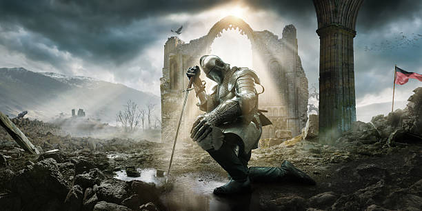
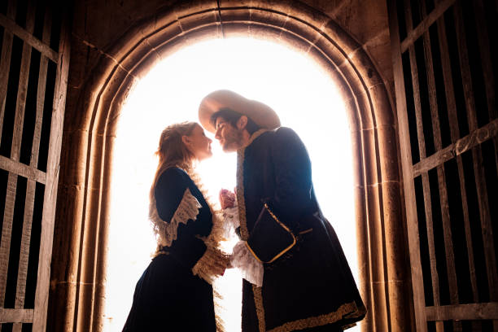
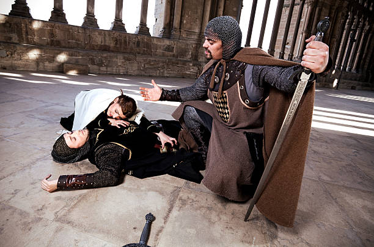
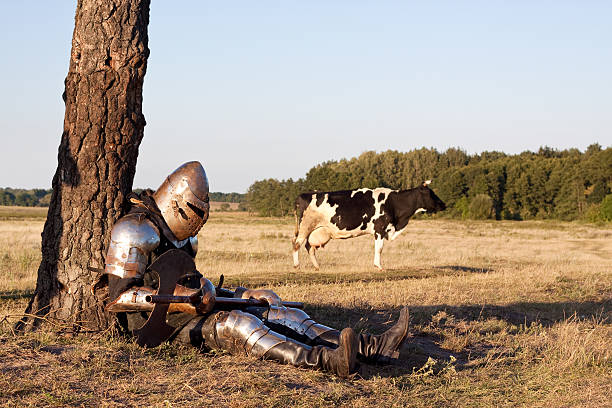
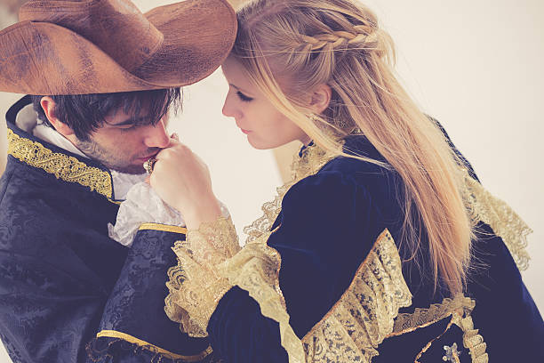

He was born to a muse, and his gift was more than talent—it was divine. With his lyre in hand and melodies pouring from his soul, Orpheus could charm wild beasts, make trees lean toward his voice, and calm even the fiercest storm. Kings invited him into their courts. Forests echoed his songs. Yet for all his fame and wonder, his heart longed for something greater—someone to sing for. He found her in the shade of a forest glade.
Eurydice, a dryad—a forest nymph—was not born for the eyes of men. She belonged to the wild: soft as moss, fleeting as wind, mysterious as moonlight. Yet when Orpheus saw her, his music stilled. No song could capture what he felt in that moment—only silence, pure and full. Eurydice, shy yet curious, listened to the man with the golden voice. She smiled, and it was a sound more beautiful than any chord he had ever struck.

Their love bloomed slowly, like ivy winding up old stone. Orpheus sang for her and only her. In his arms, Eurydice felt more human than spirit. In her presence, Orpheus felt more divine than mortal. They wandered together through quiet woods and meadows in bloom. The world hushed itself when they touched. Even the gods, it was said, looked down and paused. When they wed, the trees bowed, and the animals gathered in peace. The sun poured light upon their faces, and even the Fates, who measure every life with string, seemed to hesitate before snipping the thread of such a beautiful beginning. But the world is not kind to happiness that burns too brightly. One afternoon, not long after their wedding, Eurydice walked barefoot through the grass. It was a quiet day, warm and golden, the kind that feels eternal. But as she fled a shepherd’s unwanted attention, she stepped upon a hidden serpent in the tall grass. Its bite was swift and cruel. She fell, her body still, her soul slipping into the shadows.

When Orpheus arrived, it was too late. The warmth had already left her skin. He did not speak for days. He did not eat. He did not cry. He only sat beside her grave and played—songs filled with longing, pain, and questions the gods never answered. The earth itself mourned with him. The sky grew dim. Flowers refused to bloom. Night birds sang sorrowful tunes. The world waited for him to heal. But Orpheus did not. He could not. He would not let her go. And so, with nothing but his lyre, he made a choice no mortal had dared before: he would descend into the Underworld, the land of the dead, and bring her back. The path was long and treacherous. Through caves and endless dark, past rivers of memory and fields of sorrow, he walked. Where any other mortal would have fallen or fled, Orpheus played. At the River Styx, the ferryman Charon, who never offered rides without coin, was stilled by Orpheus’s song and allowed him to pass. At the gates of the dead, Cerberus, the three-headed guardian hound, laid down at his feet and whimpered like a pup. In the deepest chamber of the Underworld, he stood before Hades, king of shadows, and Persephone, queen of seasons and sorrow. Around him were spirits—thousands, millions—gathered in silence. And then Orpheus played.

He sang not of war or heroism, not of glory or fate. He sang of love—a love so pure it defied even the darkness. He sang of Eurydice’s smile, her laughter among the trees, the way she would lean into him as if no other place existed. He sang of mornings lost and futures imagined. Of a life they had barely begun to live. Even Hades, whose heart was forged in iron, was moved. Persephone, born of spring, wept. No mortal had ever made death feel sorrow. Hades offered him a gift—and a challenge. He would return Eurydice to the world of the living. But Orpheus must walk ahead, and she would follow behind. He could not turn to look at her. Not once. Not until they had both emerged fully into the light. If he failed, she would be lost forever. Orpheus accepted.
And so began their silent ascent. Step by careful step, he climbed the winding path through the shadows. Behind him, only the echo of footsteps. He could not speak. He could not ask if she was there. He had to trust. But as the journey neared its end, fear began to creep in. What if the gods had tricked him? What if the footsteps were only ghosts? What if she had stumbled and he could not help her? The moment daylight broke through the cave mouth, Orpheus took one last step—and his faith broke. He turned. And there she was. Eurydice. Eyes wide, hands reaching. Real. Alive. But just as their gaze met, she began to slip away. Her form grew pale, her feet faded into mist. She whispered his name one final time—and was gone. Orpheus screamed. He ran back into the darkness, but this time, the gates did not open. Charon turned away. Cerberus growled. The Underworld had given him one chance, and he had lost it. He returned to the world of light alone. Orpheus wandered, broken. He sang no more. He touched no other soul. The sun no longer warmed him, and even the wind seemed to avoid his path. He had walked into death for love—and lost it because of doubt. He would spend the rest of his days in silence, waiting for the moment he might join her again, far beyond the reach of songs.

And when he finally died—some say by fate, others say by his own choice—the Muses gathered his shattered lyre and set it among the stars. They say that in the stillest nights, when the sky is clear, you can hear his melody. A song without end. A song of longing, of hope, and of love so powerful, it dared to challenge death.

Because Orpheus and Eurydice may have been torn apart by fate… but their love still sings.